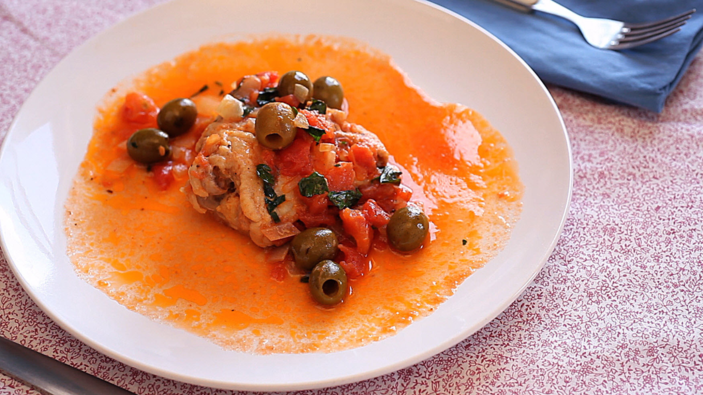

Chicken Cacciatore

Description
Chicken Cacciatore brings me back to the days of old. My nana would whip this up in the kitchen
the smells bring me back to a foregone era.
Ingredients
- 4 pounds of frying chicken, cut up
- 3 teaspoons of olive oil
- 2 butter
- 1 ounce of tomato sauce
- 1 ounce of whole tomatos
- 3/4 cups dry red wine
- Add Olives as desired
- 1 teaspoon of dry basil
- 1 teaspoon of oregano
- 1/2 teaspoon of minced garlic
- 2 teaspoon of parsley
- 3/4 teaspoon of salt
- 1/4 teaspoon of pepper
- 3 teaspoon of flour
- Cooking Spray
Steps
- Pat dry chicken
- Heat oil and butter in pan
- Take out chicken and add tomato sauce
- Add whole tomatoes, wine, basil, oregano, garlic, parsley, salt and pepper
- Simmer covered for 45-50 minutes,until chicken is tender
- Combine flour with 3 teaspoons of water, stir into sauce
- Cook for another 10 minutes, until sauce is thickened
- Add Olives as desired